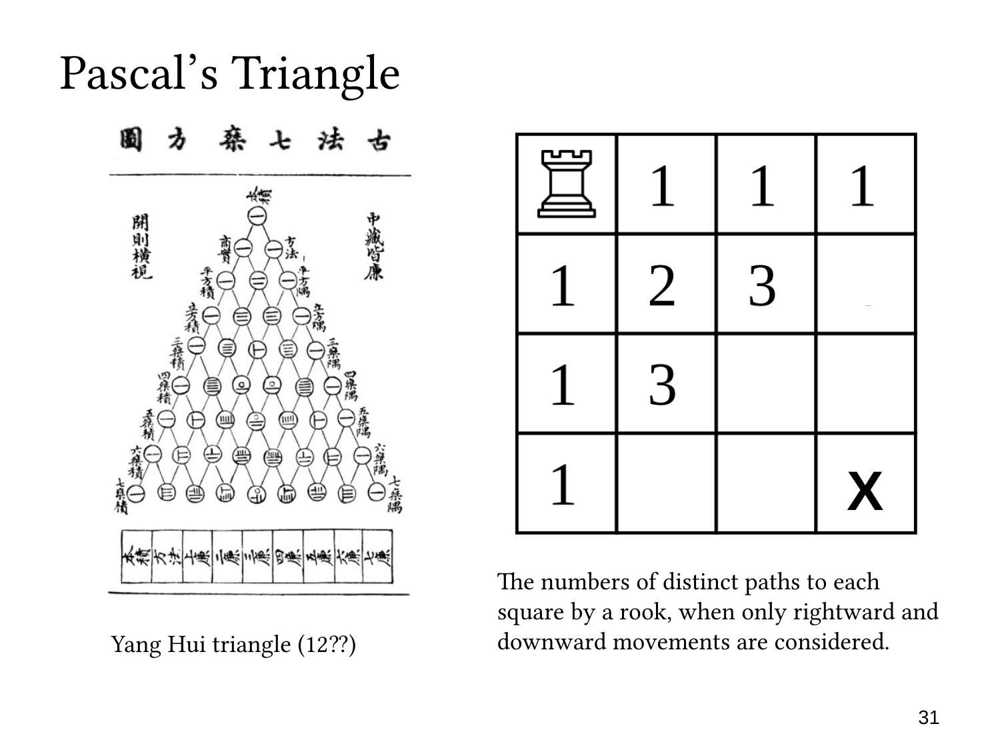

L1.7 · 第 31 页讲解原文
查看这一页课件

棋盘路径：用 1 和 2 得到两个 3
这一页填满了最上行和最左列的边界，并在两个内部格子填入 3。
第二行、第三列的格子需要两次向右和一次向下。路径可以写成
RRD,RDR,DRR.
共有三条。递推计算则是把左边的 2 与上边的 1 相加：
2+1=3.
对称位置——第三行、第二列——需要一次向右和两次向下，同样有三条路径；它由左边的 1 与上边的 2 相加得到。
一般地，从起点走 r 次向下、c 次向右，共有 r+c 步。选择其中的 r 步向下，其余向右，就得到
P(r,c)=(rr+c).
两个 3 分别是 (13) 和 (23)，相等是组合数对称性的一次具体体现。
棋盘以斜向的一组格子对应帕斯卡三角形的一行：同一组格子具有相同的总步数，而向右、向下的步数分配不同。